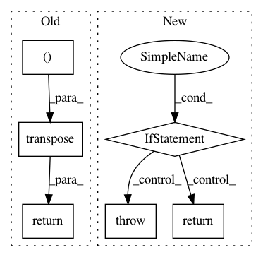

b776ae08e9e676435c5cf8d1f31a86dfd3e1897f,chainercv/utils/image/read_image.py,,read_image,#Any#Any#Any#,5
Before Change
return img[np.newaxis]
else:
// transpose (H, W, C) -> (C, H, W)
return img.transpose((2, 0, 1))
After Change
Returns:
~numpy.ndarray: An image.
if chainer.config.cv_read_image_backend == "cv2":
if _cv2_available:
return _read_image_cv2(path, dtype, color)
else:
warnings.warn(
"Although `chainer.config.cv_read_image_backend == "cv2"`, "
"cv2 is not found. As a fallback option, read_image uses "
"PIL. Either install cv2 or set "
"`chainer.config.cv_read_image_backend = "PIL" to suppress "
"this warning.")
return _read_image_pil(path, dtype, color)
elif chainer.config.cv_read_image_backend == "PIL":
return _read_image_pil(path, dtype, color)
else:
raise ValueError("chainer.config.cv_read_image_backend should be "
"either "cv2" or "PIL".")
In pattern: SUPERPATTERN
Frequency: 3
Non-data size: 6
Instances
Project Name: chainer/chainercv
Commit Name: b776ae08e9e676435c5cf8d1f31a86dfd3e1897f
Time: 2018-10-20
Author: yuyuniitani@gmail.com
File Name: chainercv/utils/image/read_image.py
Class Name:
Method Name: read_image
Project Name: GPflow/GPflow
Commit Name: bb099e4c5b48329b842dbf9884f086f7b514bc0a
Time: 2020-03-16
Author: dutordoirv@gmail.com
File Name: gpflow/models/model.py
Class Name: GPModel
Method Name: predict_f_samples
Project Name: chainer/chainercv
Commit Name: 140b558954c61e77551ff93545864b78b086e1b1
Time: 2019-01-28
Author: 69guitar1015@gmail.com
File Name: chainercv/utils/image/read_label.py
Class Name:
Method Name: read_label